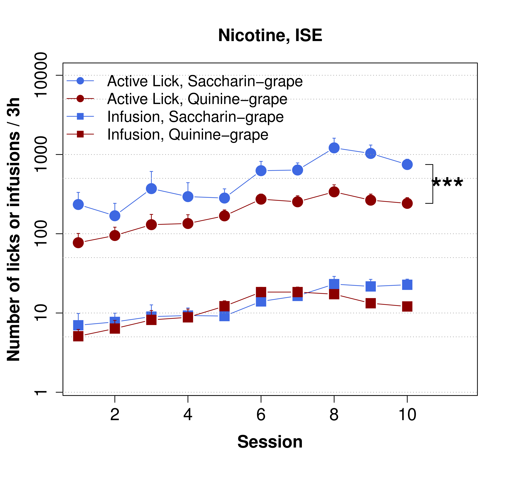
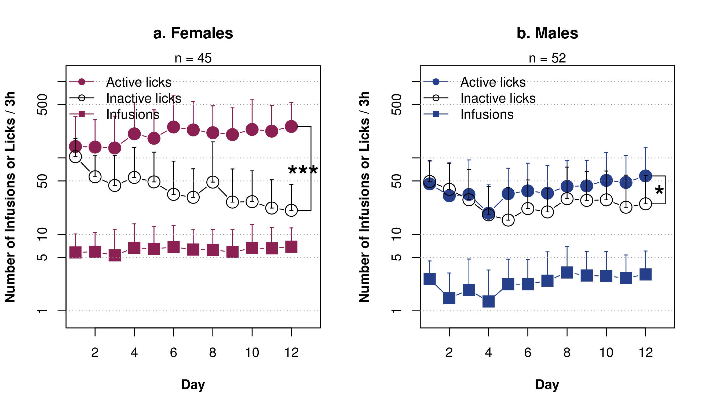

Modeling the social and sensory aspects of smoking in adolescent rats
Hao Chen
University of Tennessee Health Science Center
Rat Genomics and Models | December 12, 2015
 Cigarette is a unique consumer product that when used exactly as intended, kills 480,000 people per year.
Cigarette is a unique consumer product that when used exactly as intended, kills 480,000 people per year.
Nicotine is primarily aversive in non-smokers

|

|
| Coughing, nausea, dizziness, sickness, burning throat, headache. | Nicotine induces drug high only in significantly nicotine-deprived smokers. |
Nicotine self-administration with flavor cue

|

|
Flavor cue does not support nicotine self-administration

Chen, et al., 2011, Neuropsychopharmacology
Subjective value
Wang, Wang, Chen, 2014, Front Behave Neurosci
Social environment influences smoking behavior


Chen, et al., 2011, Neuropsychopharmacology
Modeling social learning in rats

|

|
Galef, 2011, Behav Brain Res
Social context
 Neutral
Neutral
 Inducing
Inducing
Social learning induces nicotine self-administration

Chen, et al., 2011, Neuropsychopharmacology
Social learning reverses conditioned aversion to nicotine

What is the social signal?
Odor cue is required for social learning

Chen, et al., 2011, Neuropsychopharmacology

Socially-acquired nicotine self-administration with CS2

CS2 and flavor cue

Wang & Chen, 2014, PLoS ONE
Dose response to CS2

Wang & Chen, 2014, PLoS ONE
Social learning induces nicotine self-administration
Chen, et al., 2011, Neuropsychopharmacology
Nicotine self-administration with an aversive cue

NSE: Neutral social environment | ISE: Inducing social environment
Wang, et al., Under review.
Nicotine intake with appetitive vs aversive cues
Wang, et al., Under review
Brief summary
- Nicotine is both rewarding and aversive.
- Flavor cues are associated with the aversive effect of nicotine.
- Social learning reverses conditioned aversion and facilitate nicotine self-administration.
- CS2 is a critical signal that mediates social learning and nicotine intake.
- Operant behavior is motivated by the rewarding effect of nicotine, and not by the subjective value of the flavor cue.
Socially acquired nicotine self-administration in isogenic rats

Dose response to nicotine in inbred strains

GWAS using heterogeneous stock rats
Socially acquired nicotine self-administration in HS rats
Wang, et al., 2014, Gene brain behav
Demonstrator behavior

Wang, et al., 2014, Gene brain behav
Socially-acquired nicotine self-administration with CS2
Nicotine self-administration
Sessions 1-10
Menthol flavored cigarettes
Modeling the effect of menthol
Cooling sensation is a conditioned reinforcer for nicotine
Wang, Wang, Chen, 2014, Front Behave Neurosci
Menthol facilitates nicotine intake
Wang, Wang, Chen, 2014, Front Behave Neurosci
Extinction and Reinstatement
Wang, Wang, Chen, 2014, Front Behave Neurosci
Menthol as a cue for nicotine
Heritability = 0.67
Acknowledgements
Current lab membersTengfei Wang, PostdocWenyan Han, Postdoc Jie Shen, Technician
Past lab membersReziwan YimitiQinglin Wu Katie Hiler Hongxiao Song Xia Hong
|
GWAS collaboratorsAbraham Palmer, U Chicago | UCSDLeah-Solberg Woods, MCW
Other collaboratorsAron Geurts, Medical College of WisconsinRachel Tyndale, University of Torondo
FundingNIDA |
Nicotine metabolism